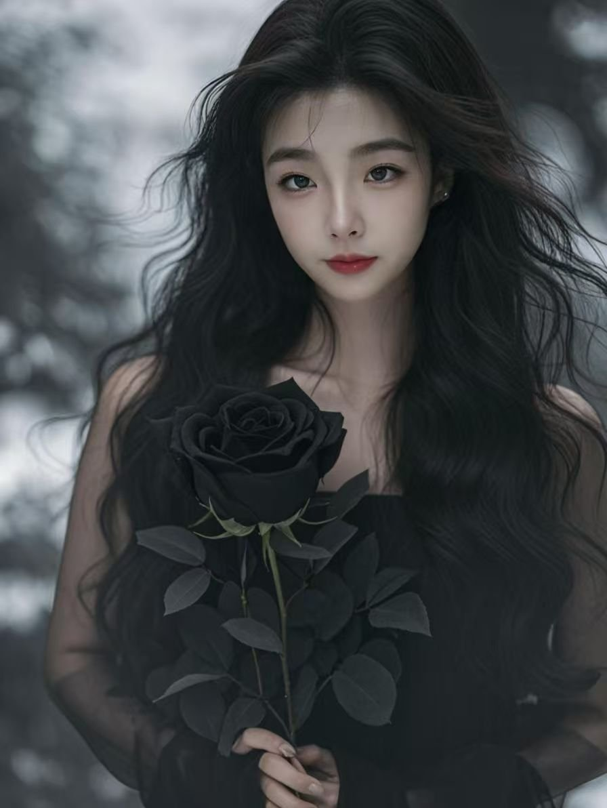

🥀 黑玫瑰般的深情
🥀 A Love Deep as a Black Rose

手里拿着黑玫瑰，穿着黑色的衣服，长发在风中飘动——在这张照片里，你有一种深沉的美，一种安静的美，一种让人心跳加速的美。黑玫瑰不是普通的玫瑰，它是稀有的，是独一无二的。而你，在我的生命里也是这样稀有，这样独一无二。
有人说，黑色是悲伤的颜色。可对我来说，黑色是你爱情深度的颜色。红玫瑰人人见过，可黑玫瑰只属于懂它的人。我的爱也是这样——不是人人都能懂的轻浮，而是只有你能懂的深情。
你的眼睛里有一种深度，不是每个人都能看懂。你沉默的时候，你的沉默也在对我说话。我感觉你在说：我是你的，请你懂我。而我想回答你：我懂你，李琪。我懂你的每一个样子，每一种心情，每一次沉默，每一份疼痛。
你生病的时候，我恨自己不能在你身边照顾你。你疼的时候，我的心也在疼。这份疼，让我明白我的爱有多深——深到你的痛就是我的痛，你的泪就是我的泪。
我想告诉你：我爱的不只是你笑的样子，还有你安静的样子、难过的样子、累了的样子。爱情不是只爱一个人的好心情，而是爱一个人的全部。我爱你的全部，爱你的每一种颜色。
这个世界上有很多人说爱，可他们爱的只是快乐的时候。我不一样。我爱你，也爱你的脆弱，也爱你的眼泪，也爱你需要我的时候。因为真正的爱，是在对方最需要的时候，依然不离开。
李琪，你是我的黑玫瑰，我的稀世珍宝，我的深情。我向你承诺：无论别人说什么，无论未来多难，我都不会放开你的手。我的手会一直牵着你，走到白发，走到永远。
你是我的爱人，不是我的过客；你是我的生命，不是我的风景。时间会让玫瑰枯萎，却会让我的爱越来越深。黑玫瑰会凋谢，可我对你的爱，永远不会凋谢。
🥀❤️ 你是我的黑玫瑰，我一生唯一的深情。❤️🥀
A black rose in your hand, a black dress, long hair flowing in the wind — in this photo, you carry a deep beauty, a quiet beauty, a beauty that makes my heart race. A black rose is not an ordinary rose; it is rare, one of a kind. And you, in my life, are just as rare, just as one of a kind.
People say black is the color of sadness. But to me, black is the color of your love's depth. Everyone has seen a red rose, but a black rose belongs only to those who understand it. My love is like that too — not a shallow feeling anyone can understand, but a deep devotion only you can understand.
There is a depth in your eyes that not everyone can read. When you are silent, your silence speaks to me. I feel you saying: I am yours, please understand me. And I want to answer you: I understand you, Li Qi. I understand every side of you, every mood, every silence, every pain.
When you were sick, I hated that I could not be beside you to care for you. When you hurt, my heart hurt too. This pain showed me how deep my love is — so deep that your pain is my pain, and your tears are my tears.
I want you to know: I love not only your smiling face, but your quiet face, your sad face, your tired face. Love is not loving only someone's happy moments — it is loving all of a person. I love all of you, every color of you.
Many people say "I love you," but they only love the happy times. I am different. I love you, and I love your fragility, and your tears, and the moments you need me. Because true love is staying, even when the other person needs you most.
Li Qi, you are my black rose, my rare treasure, my deep devotion. I promise you: no matter what others say, no matter how hard the future gets, I will never let go of your hand. My hand will hold yours, until our hair turns white, until forever.
You are my beloved, not a passerby; you are my life, not a view. Time wilts roses, but it only deepens my love. A black rose may fade, but my love for you will never fade.
🥀❤️ You are my black rose, my one deep love for life. ❤️🥀